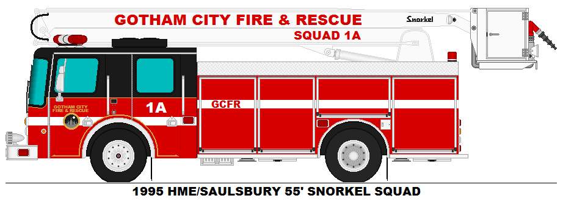
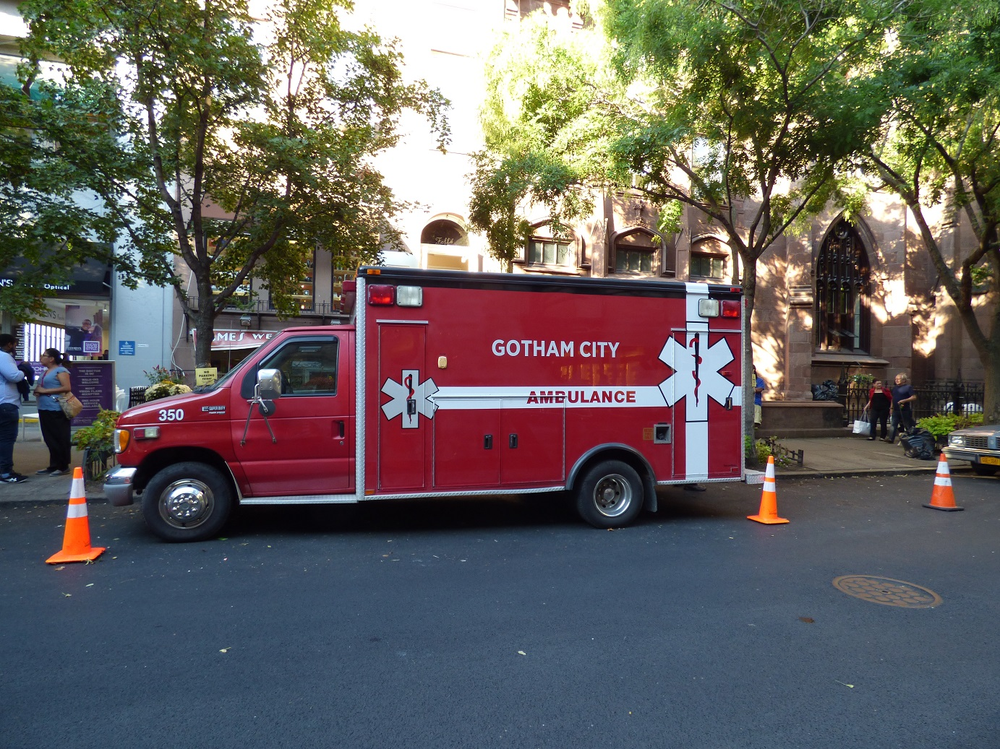

1. Better protection of property belonging to the government, BBMP, BDA, BWSSB, Karnataka Slum Clearance Board, City Municipal Council, Town Municipal Council and tanks, lakes and tank-beds handed over for maintenance to the Forest Department with in Bangalore Urban and Rural District by the government, any other property specified by government from time to time through notifications. 2. The detection of commission or any design to commit any such offence relating to the unauthorized occupation of land belonging to the government, to investigate and prosecute such offences. 3. Identify the employees and officers of the organization included in the jurisdiction of BMTF who collude with the public in making them commit the offences and to take action against the offences and irregularities under specified statutes.
To impart training in basic fire prevention, fire fighting, rescue operations, evacuation drills etc. To provide standby fire fighting arrangements at large public Amusement areas, gatherings and important public meetings. To create public awareness on fire prevention through mock drills, evacuation drills, fire fighting demonstrations, lecture classes, seminars, exhibitions etc and Addressing the issues of fire, rescue and emergency responses at grass root level through program SAFE – Students Association for Fire Education, designed keeping in mind younger generation and student community.
Instant Response Our 24/7 support team ensures you get an instant response
Functional Organisations Suvarna Arogya Suraksha Trust, a Trust registered under the Indian Trusts Act Drugs, Logistics and Warehousing Society Karnataka Aids Prevention Society. Project Administrator's Office, Karnataka Health Systems Reforms and Development Project.